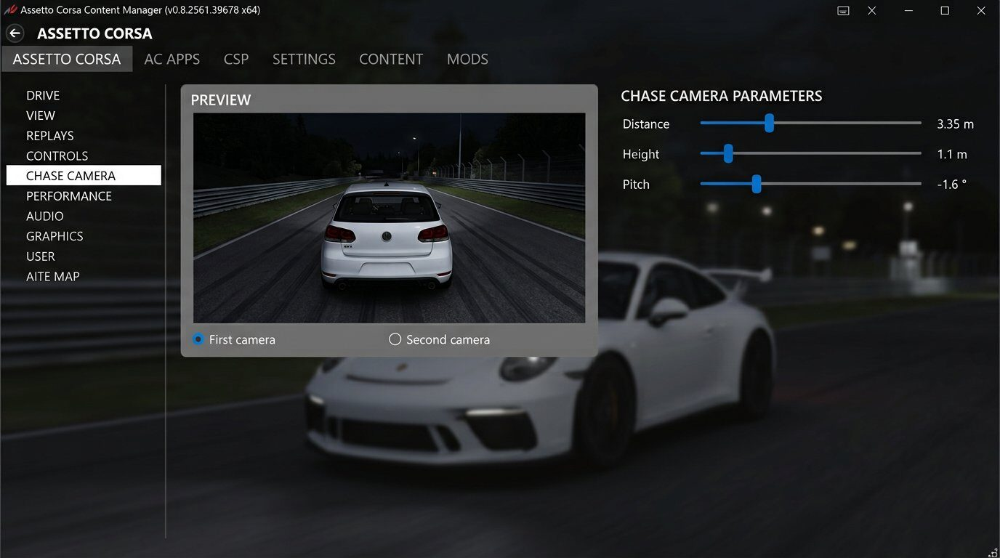
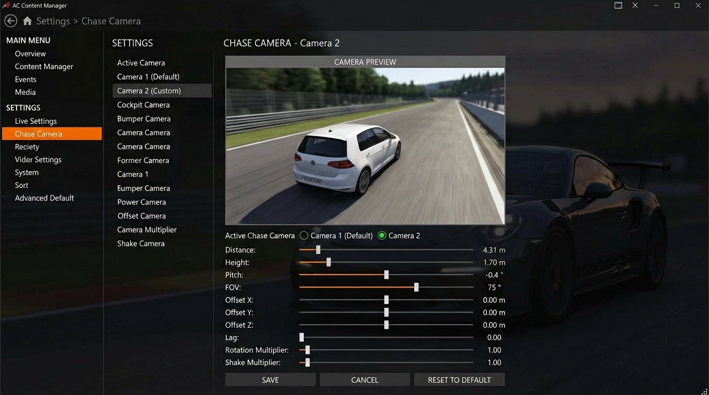

نصب Chaser Camera
فایل دوربین را کپی کنید، kirbycam را انتخاب کنید، و زاویه دوربین سومشخص را تنظیم کنید.
-
1
کپی فایل Chaser Camera
فایل Chaser Camera را در مسیر زیر کپی کنید:
...\SteamLibrary\steamapps\common\assettocorsa\extension\lua\chaser-cameraپوشه chaser-camera داخل extension\lua بازی است.
-
2
تنظیم در Custom Shaders Patch
وارد Content Manager شوید و مسیر زیر را باز کنید:
Settings → Custom Shaders Patch → Chaser Camera
اینجا حتماً باید روی kirbycam باشد.
⚠ مهم اگر گزینه روی kirbycam نباشد، دوربین پک درست کار نمیکند. -
3
زاویه دوربین سومشخص
برای تنظیم زاویه، این مسیر را باز کنید:
Settings → Assetto Corsa → Chase Camera
دو زاویه دارید: First camera و Second camera. هر کدام Distance / Height / Pitch جدا دارند.

First camera زاویه نزدیکتر / پایینتر — نمونه: Distance ≈ 3.35m · Height ≈ 1.1m · Pitch ≈ -1.6° 
Second camera زاویه دورتر / بالاتر — نمونه: Distance ≈ 4.31m · Height ≈ 1.7m · Pitch ≈ -0.4° مقادیر را مطابق پک یا سلیقه خود تنظیم کنید؛ عکسها فقط راهنمای محل تنظیمات هستند.